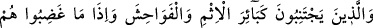
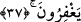
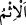
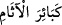

Beraberce yediler. Bunun üzerine Nûri (k.s.) hazretleri: “Ey âlim, keşke sen de hâl
sâhibi olsaydın” dedi.
Yüce Mevlâ’ya olan tevekkül, kesin inanç ve güven işte bunlar, şerîat makamında
tabîatı ıslâh ile hâsıl olan tevhîdî fiillerin özelliklerindendir.
Şâir şöyle der:
Temiz ve duru ol, tabîat kuyusundan dışarı çık ki
Çamurlu suda berraklık olmaz.
37. Onlar, büyük günahlardan ve hayâsızlıktan kaçınırlar; kızdıkları zaman da
kusurları bağışlarlar.
“Onlar, büyük günâhlardan ve hayasızlıktan kaçınırlar.”
Âyette geçen “ictinâb” kelimesi, bir şeyden uzak durmak ve onu hemen terk etmek
demektir.
“/ism” kelimesi “günah” mânâsındadır. Kâmus’ta da böyledir. Râgıb şöyle
demiştir: “İsm” ve “asam” kelimeleri, kişiyi sevaptan geri bırakan işlerin adıdır. Allah
Teâlâ’nın “o ikisinde de (şarap ve kumarda) büyük günah vardır” (el-Bakara 2/219)
sözünün mânâsı şudur: “Yani bunları alıp kullanmada hayırlardan geri kalma vardır.”
Yalana “ism” demek, insana canlı (hayvan) demek gibidir. Zîrâ insan da canlılar
zümresindendir.
Kebîre denilen büyük günah Allah Teâlâ’nın, kendisine dünyada had cezası âhirette de
azâbı vâcip kıldığı günahlardır. Müfredat’da şöyle denmiştir: Büyük günah, cezası
büyük olan her günahtır. Âyetin mânâsı şöyledir: “O kullar, bu nevi büyük günahlardan
sakınırlar.” Burada maksad “günah cinsi” olduğu için Allah Teâlâ “/kebâire’l-
âsâm” diye muzafun ileyhi çoğul olarak getirmemiştir.
Keşfu’l-esrâr’da şöyle denmektedir: Allah Teâlâ “kebâir” kelimesini “ism”
kelimesine muzaf kılmıştır. Çünkü büyük günahlardan sakınınca küçük günahlar
affolunur. Nitekim âyet-i kerîmede şöyle buyrulur: “Eğer size yasaklanan büyük
günahlardan kaçınırsanız sizin küçük günahlarınızı örteriz ve sizi güzel bir yere
sokarız.” (en-Nisâ 4/31)
Râgıb şöyle demiştir: “Onlar büyük günahlardan kaçınırlar” (eş-Şûrâ 42/37) ve
“Eğer size yasaklanan büyük günahlardan kaçınırsanız” (en-Nisâ 4/31)
âyetlerindeki “büyük günahlar”dan maksadın şirk yani Allah’a ortak koşmak olduğu
söylenmiştir. Çünkü âyet-i kerimede: “ (Allah’a) ortak koşmak elbette büyük bir